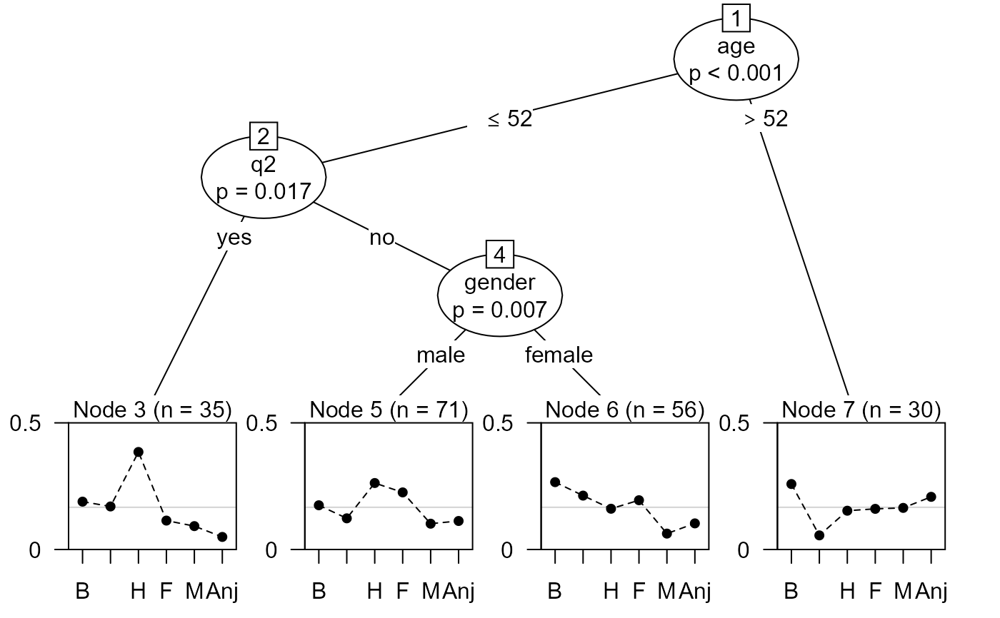
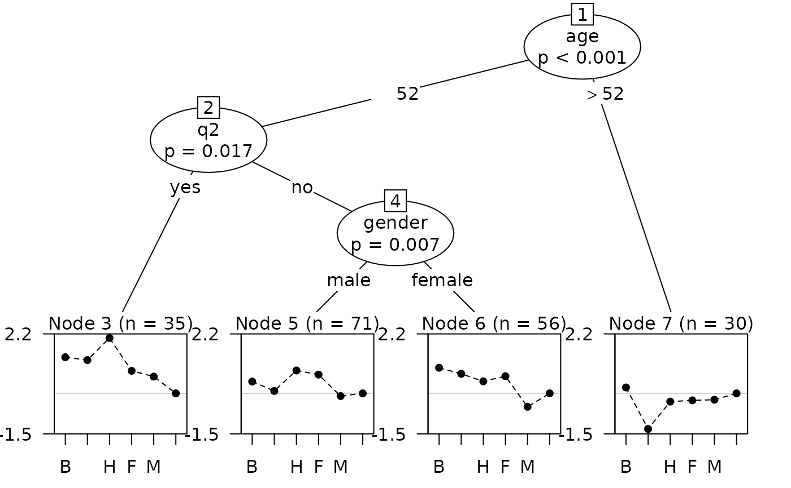

Recursive partitioning based on Plackett-Luce models.
pltree(formula, data, worth, na.action, cluster, ref = NULL, ...)
| formula | A symbolic description of the model to be fitted, of the form
|
|---|---|
| data | An optional data object containing the variables in the model.
Either a data frame of variables in |
| worth | A optional formula specifying a linear model for log-worth.
If |
| na.action | how NAs are treated for variables in |
| cluster | an optional vector of cluster IDs to be employed for clustered
covariances in the parameter stability tests, see |
| ref | an integer or character string specifying the reference item (for which log ability will be set to zero). If NULL the first item is used. |
| ... | additional arguments, passed to |
An object of class "pltree" inheriting from "bttree"
and "modelparty".
Plackett-Luce trees are an application of model-based recursive partitioning
(implemented in mob) to Plackett-Luce models for
rankings. The partitioning is based on ranking covariates, e.g. attributes of
the judge making the ranking, or conditions under which the ranking is made.
The response should be a grouped_rankings object that groups
rankings with common covariate values. This may be included in a data frame
alongside the covariates.
Most arguments of PlackettLuce can be passed on by pltree.
However, Plackett-Luce tree with fixed adherence are not implemented.
Arguably it makes more sense to estimate adherence or reliability within
the nodes of the Plackett-Luce tree.
Various methods are provided for "pltree" objects, most of them
inherited from "modelparty" objects (e.g. print,
summary), or "bttree" objects (plot). The plot
method employs the node_btplot
panel-generating function. The See Also
section gives details of separately documented methods.
bttree For fitting Bradley-Terry trees
(equivalent to the Plackett-Luce model for paired comparisons without ties).
coef, vcov, AIC and predict methods are documented on
pltree-summaries.
itempar, extracts the abilities or item parameters
in each node of the tree using itempar.PlackettLuce.
fitted, computes probabilities for the observed
choices based on the full tree.
# Bradley-Terry example if (require(psychotree)){ ## Germany's Next Topmodel 2007 data data("Topmodel2007", package = "psychotree") ## convert paircomp object to grouped rankings R <- as.grouped_rankings(Topmodel2007$preference) ## rankings are grouped by judge print(R[1:2,], max = 4) ## Topmodel2007[, -1] gives covariate values for each judge print(Topmodel2007[1:2, -1]) ## fit partition model based on all variables except preference ## set npseudo = 0 as all judges rank all models tm_tree <- pltree(R ~ ., data = Topmodel2007[, -1], minsize = 5, npseudo = 0) ## plot shows abilities constrained to sum to 1 plot(tm_tree, abbreviate = 1, yscale = c(0, 0.5)) ## instead show log-abilities with Anja as reference (need to used index) plot(tm_tree, abbreviate = 1, worth = FALSE, ref = 6, yscale = c(-1.5, 2.2)) ## log-abilities, zero sum contrast itempar(tm_tree, log = TRUE) }#>#>#>#>#>#>#> 1 #> "Barbara > Anni, Barbara > Hana, Anni > Hana, Barbara > Fiona, ..." #> 2 #> "Anni > Barbara, Hana > Barbara, Hana > Anni, Fiona > Barbara, ..." #> gender age q1 q2 q3 #> 1 male 66 no no no #> 2 male 21 yes yes yes#> Barbara Anni Hana Fiona Mandy Anja #> 3 0.3252815 0.2193055 1.03734300 -0.1785927 -0.39080852 -1.0125288 #> 5 0.1106734 -0.2392155 0.51830152 0.3662483 -0.42801793 -0.3279899 #> 6 0.5715647 0.3486194 0.06927133 0.2590188 -0.87250734 -0.3759669 #> 7 0.5343475 -1.0000476 0.01067104 0.0575107 0.08093274 0.3165856